SOBRE
Nosso site tem o objetivo de trazer uma das coisas que há de melhor, que são as belas paisagens, em formato de fotografias, que nos deixam com uma séria vontade de largar tudo e ir "ganhar" o mundo afora. Exploramos diversas paisagens e, aqui nesta página, vocês irão deslumbrar das 04 paisagens mais belas, fotografadas por alguns viajantes. Aproveitem!
Lisse - Holanda
04º lugar
É numa pequena cidade da Holanda que é possível contemplar todas as cores e todos os tipos de tulipas, Lisse. Exportadas para o mundo todo, as tulipas estão localizadas no famoso parque das flores, Parque Keukenhoff, cenário perfeito para registrar imagens das mais belas e coloridas tulipas.Há diversas plantações pela cidade, onde os produtores abrigam e cultivam os bulbos para que essas lindas tulipas sejam exportadas.
Portofino - Itália
03º lugar
Portofino é uma aldeia piscatória na Riviera italiana, a sudeste da cidade de Génova. As casas cor de pastel, as boutiques de luxo e os restaurantes de marisco rodeiam a Piazzetta, uma pequena praça calcetada com vista para o porto, repleto de superiates. Existe um caminho que conduz da Piazzetta ao Castello Brown, uma fortaleza e museu do século XVI, com exposições de arte e vistas panorâmicas da cidade e do mar Lígure.
Lapônia - Finlândia
02º lugar
Há um fenômeno que pode ser contemplado apenas em regiões polares do planeta, regiões como a Lapônia, na Finlândia, onde é possível contemplar o impressionante fenômeno da Aurora Boreal Esse fenômeno acontece quando elétrons de alta velocidade são puxados com os ventos solares pelos campos magnéticos nos polos da Terra e com o choque das moléculas forma a aurora. A Finlândia é um país da Europa que faz divisa com Suécia, Rússia e Noruega.
Cumbuco - Brasil
01º lugar
Cumbuco é uma pequena vila de pescadores situada a cerca de 25 quilômetros a noroeste da cidade de Fortaleza, no estado do Ceará, ao longo da costa nordeste do Brasil. A população ronda os 1.600 habitantes. A vila é considerada pitoresca e pitoresca e atrai turismo nacional e internacional.